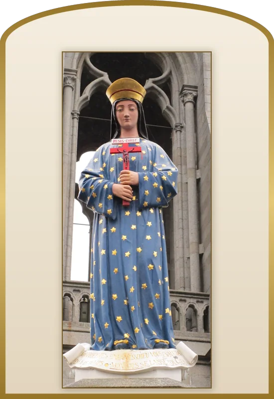
Beata Maria de Pontmain
Notre-Dame de Pontmain
17 janvier
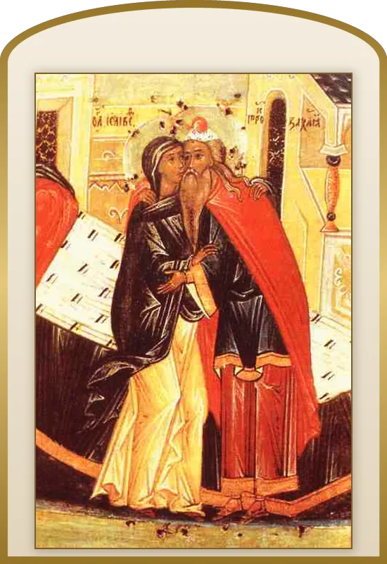
S. Elisabeth
Sainte Élisabeth, mère de Jean-Baptiste
5 novembre
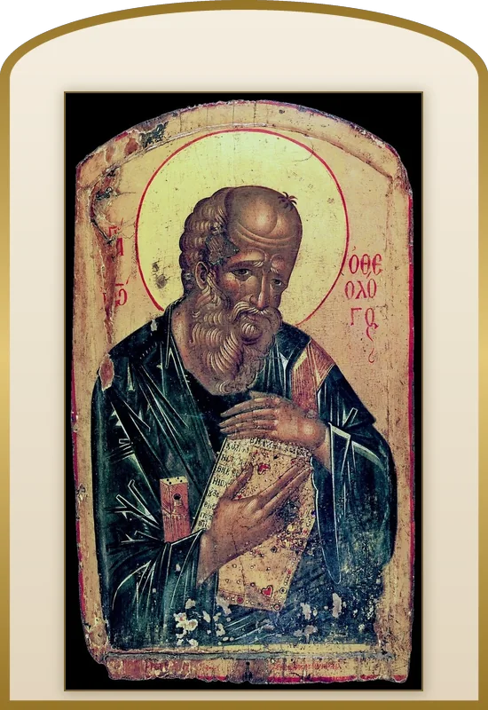
S. Ioannes Apostolus
Saint Jean, apôtre et évangéliste
27 décembre
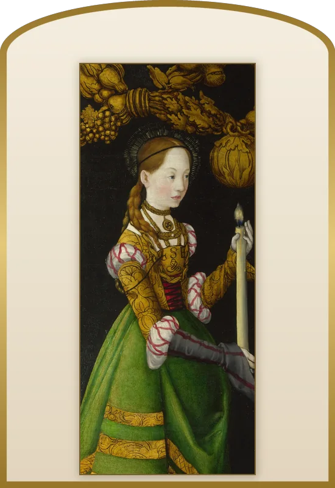
S. Genovefa
Sainte Geneviève de Paris
3 janvier
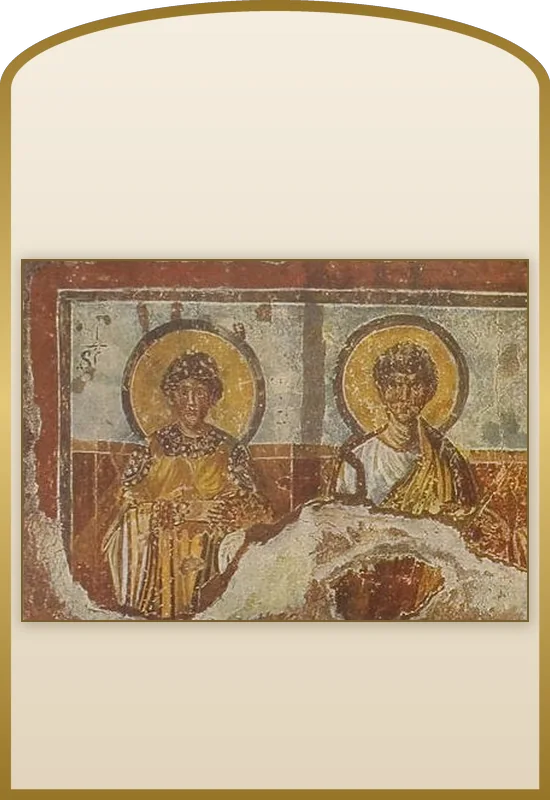
S. Beatrix
Sainte Béatrix, martyre à Rome
29 juillet
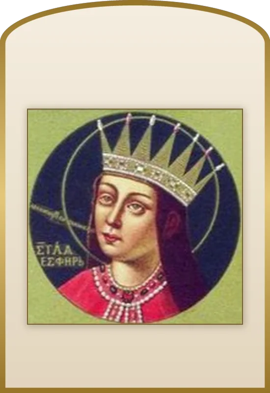
S. Esther Regina
Sainte Esther, reine
Saints Ancêtres
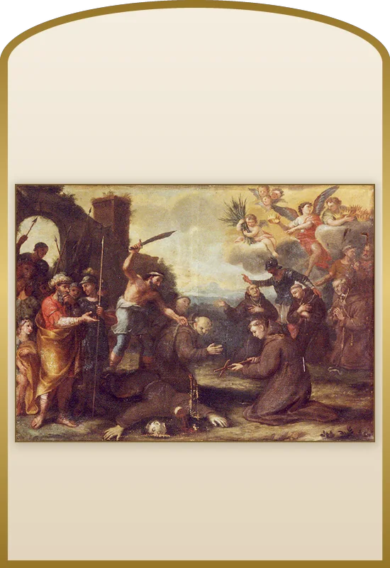
S. Hugolinus
Saint Hugolin, martyr de Ceuta
10 octobre
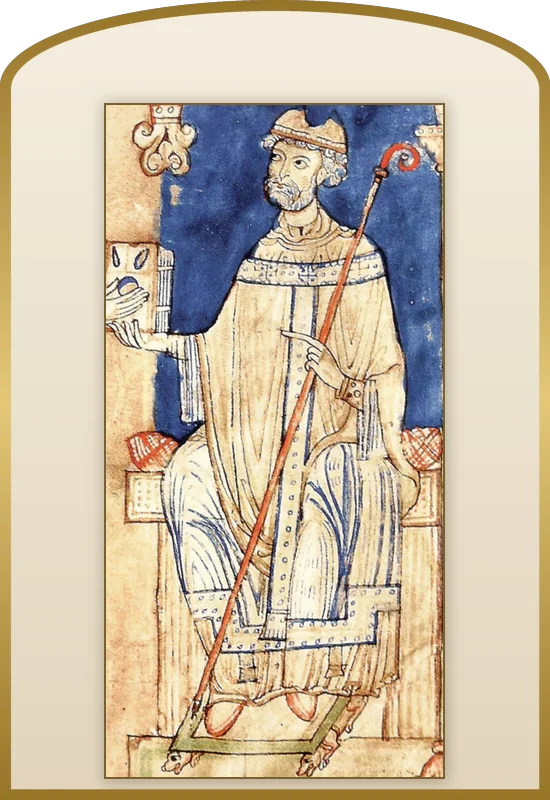
S. Anselmus
Saint Anselme de Cantorbéry
21 avril
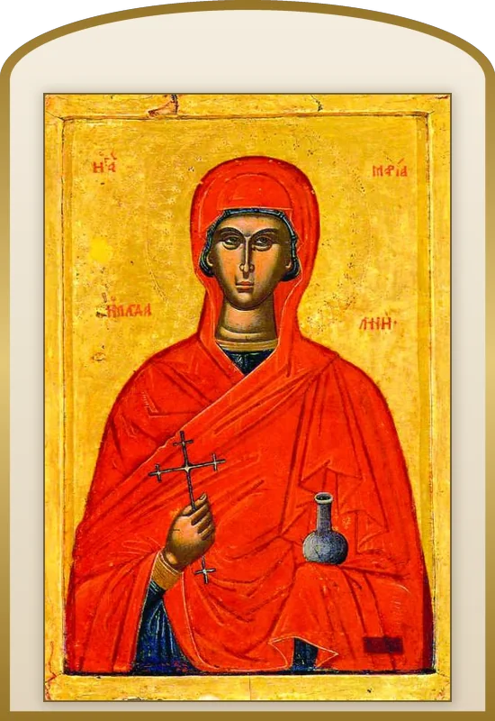
S. Maria Magdalena
Sainte Marie-Madeleine
22 juillet
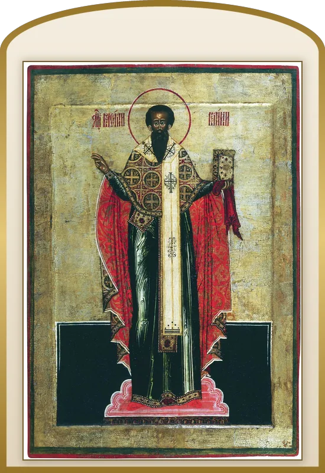
S. Basilius Magnus
Saint Basile le Grand
2 janvier
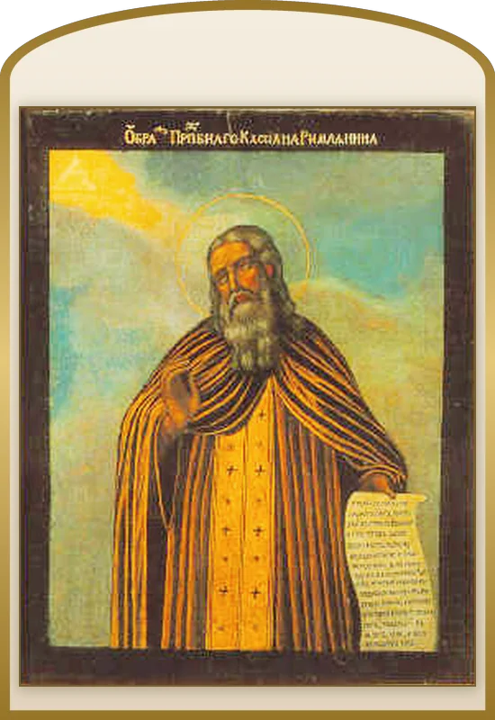
S. Ioannes Cassianus
Saint Jean Cassien
23 juillet